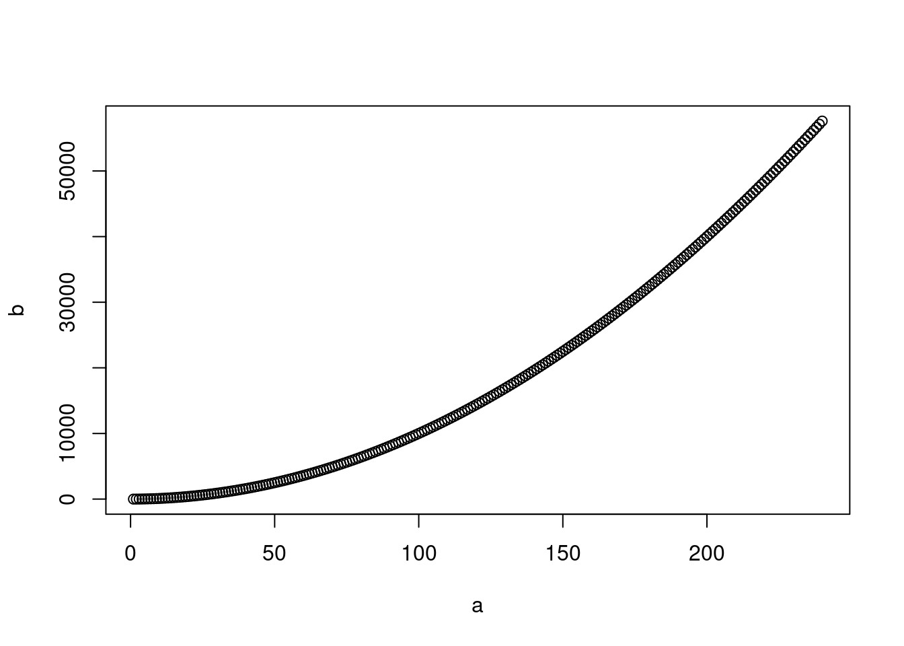

1 + 2[1] 35 / 8[1] 0.6251 + 3 / 4[1] 1.75(1 + 3) / 4 [1] 1# please note, that if no brackets are given, the division is computed first, addition second.
1 == 1[1] TRUEThis document describes Module 1 of the course “Introduction to R”, held in Summer 2023 for the Biodiversity Exploratories.
In order to learn coding, you need to code
this Module is splitted into TODO_number chapters. The chapters are intented to be worked on sequentially, but feel free to try working on them in any other order (please report back if recommendable).
TODO add table of content
A prerequisite of this course is having R and RStudio installed. If you did not do so, please follow Chapter 1.2 in “Beckmann”.
Aim of this Module : getting familiar with RStudio.
Material : Beckerman, Ch 1.4 - 1.11 and R4DS, Ch TODO (…)
During this chapter, you will be working with this document, and with Beckerman, Ch 1. While working througn this chapter, try to develop the habit to actively code while reading. Every time you see a code, try it out in your console! This whole chapter is about experiencing R. The more things you try out, the more you will develop a feeling about programming, and the easier it get to learn new things.
Most of the time we have to understand before we can act. In programming, it is the other way around. We have to act first in order to understand.
One of the key insights about learning how to program is that you have to experience it in order to understand. This can sometimes be difficult, because we are usually trained to understand first and act second, not to act before understanding. However, many concepts of programming are hard to understand without having experienced them, but easy to understand after you have already applied them.
During this chapter, practice to establish an active way of reading, having RStudio and the console open, and applying the exercises. Additionally, try out new things! Most examples can be slightly modified by you. You will see examples of this as you go through this module.
Please work through “Beckerman” Ch 1.4 and 1.5, and solve the below exercises after.
Please note the below discussion point, where the “Beckerman” book is recommending something I do not agree with.
Please compute the solution to the following mathematical operations using your R console :
\(1 + 2\)
\(5 / 8\)
\(1 + 3 / 4\)
\((1 + 3) / 4\)
\(1 == 1\)
1 + 2[1] 35 / 8[1] 0.6251 + 3 / 4[1] 1.75(1 + 3) / 4 [1] 1# please note, that if no brackets are given, the division is computed first, addition second.
1 == 1[1] TRUEUse R to create the integers from 2 to 10, inclusive.
2:10[1] 2 3 4 5 6 7 8 9 10seq(from = 2, to = 10)[1] 2 3 4 5 6 7 8 9 10seq(from = 2, to = 10, by = 1)[1] 2 3 4 5 6 7 8 9 10Use R to create the integers from 100 to 200, inclusive. Save them in a variable called vec1
There are (at least) tree solutions :
vec1 <- 100:200
vec1 [1] 100 101 102 103 104 105 106 107 108 109 110 111 112 113 114 115 116 117
[19] 118 119 120 121 122 123 124 125 126 127 128 129 130 131 132 133 134 135
[37] 136 137 138 139 140 141 142 143 144 145 146 147 148 149 150 151 152 153
[55] 154 155 156 157 158 159 160 161 162 163 164 165 166 167 168 169 170 171
[73] 172 173 174 175 176 177 178 179 180 181 182 183 184 185 186 187 188 189
[91] 190 191 192 193 194 195 196 197 198 199 200vec1 <- seq(from = 100, to = 200)
vec1 [1] 100 101 102 103 104 105 106 107 108 109 110 111 112 113 114 115 116 117
[19] 118 119 120 121 122 123 124 125 126 127 128 129 130 131 132 133 134 135
[37] 136 137 138 139 140 141 142 143 144 145 146 147 148 149 150 151 152 153
[55] 154 155 156 157 158 159 160 161 162 163 164 165 166 167 168 169 170 171
[73] 172 173 174 175 176 177 178 179 180 181 182 183 184 185 186 187 188 189
[91] 190 191 192 193 194 195 196 197 198 199 200vec1 <- seq(from = 100, to = 200, by = 1)
vec1 [1] 100 101 102 103 104 105 106 107 108 109 110 111 112 113 114 115 116 117
[19] 118 119 120 121 122 123 124 125 126 127 128 129 130 131 132 133 134 135
[37] 136 137 138 139 140 141 142 143 144 145 146 147 148 149 150 151 152 153
[55] 154 155 156 157 158 159 160 161 162 163 164 165 166 167 168 169 170 171
[73] 172 173 174 175 176 177 178 179 180 181 182 183 184 185 186 187 188 189
[91] 190 191 192 193 194 195 196 197 198 199 200Use R to create the numbers from 100 to 200, using steps of 0.5. In other words, create the numbers \(100, 100.5, 101, 101.5, ... ,199.5, 200\).
seq(from = 100, to = 200, by = 0.5) [1] 100.0 100.5 101.0 101.5 102.0 102.5 103.0 103.5 104.0 104.5 105.0 105.5
[13] 106.0 106.5 107.0 107.5 108.0 108.5 109.0 109.5 110.0 110.5 111.0 111.5
[25] 112.0 112.5 113.0 113.5 114.0 114.5 115.0 115.5 116.0 116.5 117.0 117.5
[37] 118.0 118.5 119.0 119.5 120.0 120.5 121.0 121.5 122.0 122.5 123.0 123.5
[49] 124.0 124.5 125.0 125.5 126.0 126.5 127.0 127.5 128.0 128.5 129.0 129.5
[61] 130.0 130.5 131.0 131.5 132.0 132.5 133.0 133.5 134.0 134.5 135.0 135.5
[73] 136.0 136.5 137.0 137.5 138.0 138.5 139.0 139.5 140.0 140.5 141.0 141.5
[85] 142.0 142.5 143.0 143.5 144.0 144.5 145.0 145.5 146.0 146.5 147.0 147.5
[97] 148.0 148.5 149.0 149.5 150.0 150.5 151.0 151.5 152.0 152.5 153.0 153.5
[109] 154.0 154.5 155.0 155.5 156.0 156.5 157.0 157.5 158.0 158.5 159.0 159.5
[121] 160.0 160.5 161.0 161.5 162.0 162.5 163.0 163.5 164.0 164.5 165.0 165.5
[133] 166.0 166.5 167.0 167.5 168.0 168.5 169.0 169.5 170.0 170.5 171.0 171.5
[145] 172.0 172.5 173.0 173.5 174.0 174.5 175.0 175.5 176.0 176.5 177.0 177.5
[157] 178.0 178.5 179.0 179.5 180.0 180.5 181.0 181.5 182.0 182.5 183.0 183.5
[169] 184.0 184.5 185.0 185.5 186.0 186.5 187.0 187.5 188.0 188.5 189.0 189.5
[181] 190.0 190.5 191.0 191.5 192.0 192.5 193.0 193.5 194.0 194.5 195.0 195.5
[193] 196.0 196.5 197.0 197.5 198.0 198.5 199.0 199.5 200.0Please give us the sequence of numbers that begins at 73, ends at 156, and has a 0.23 unit difference between the numbers.
Did you notice something special?
seq(from = 73, to = 156, by = 0.23) [1] 73.00 73.23 73.46 73.69 73.92 74.15 74.38 74.61 74.84 75.07
[11] 75.30 75.53 75.76 75.99 76.22 76.45 76.68 76.91 77.14 77.37
[21] 77.60 77.83 78.06 78.29 78.52 78.75 78.98 79.21 79.44 79.67
[31] 79.90 80.13 80.36 80.59 80.82 81.05 81.28 81.51 81.74 81.97
[41] 82.20 82.43 82.66 82.89 83.12 83.35 83.58 83.81 84.04 84.27
[51] 84.50 84.73 84.96 85.19 85.42 85.65 85.88 86.11 86.34 86.57
[61] 86.80 87.03 87.26 87.49 87.72 87.95 88.18 88.41 88.64 88.87
[71] 89.10 89.33 89.56 89.79 90.02 90.25 90.48 90.71 90.94 91.17
[81] 91.40 91.63 91.86 92.09 92.32 92.55 92.78 93.01 93.24 93.47
[91] 93.70 93.93 94.16 94.39 94.62 94.85 95.08 95.31 95.54 95.77
[101] 96.00 96.23 96.46 96.69 96.92 97.15 97.38 97.61 97.84 98.07
[111] 98.30 98.53 98.76 98.99 99.22 99.45 99.68 99.91 100.14 100.37
[121] 100.60 100.83 101.06 101.29 101.52 101.75 101.98 102.21 102.44 102.67
[131] 102.90 103.13 103.36 103.59 103.82 104.05 104.28 104.51 104.74 104.97
[141] 105.20 105.43 105.66 105.89 106.12 106.35 106.58 106.81 107.04 107.27
[151] 107.50 107.73 107.96 108.19 108.42 108.65 108.88 109.11 109.34 109.57
[161] 109.80 110.03 110.26 110.49 110.72 110.95 111.18 111.41 111.64 111.87
[171] 112.10 112.33 112.56 112.79 113.02 113.25 113.48 113.71 113.94 114.17
[181] 114.40 114.63 114.86 115.09 115.32 115.55 115.78 116.01 116.24 116.47
[191] 116.70 116.93 117.16 117.39 117.62 117.85 118.08 118.31 118.54 118.77
[201] 119.00 119.23 119.46 119.69 119.92 120.15 120.38 120.61 120.84 121.07
[211] 121.30 121.53 121.76 121.99 122.22 122.45 122.68 122.91 123.14 123.37
[221] 123.60 123.83 124.06 124.29 124.52 124.75 124.98 125.21 125.44 125.67
[231] 125.90 126.13 126.36 126.59 126.82 127.05 127.28 127.51 127.74 127.97
[241] 128.20 128.43 128.66 128.89 129.12 129.35 129.58 129.81 130.04 130.27
[251] 130.50 130.73 130.96 131.19 131.42 131.65 131.88 132.11 132.34 132.57
[261] 132.80 133.03 133.26 133.49 133.72 133.95 134.18 134.41 134.64 134.87
[271] 135.10 135.33 135.56 135.79 136.02 136.25 136.48 136.71 136.94 137.17
[281] 137.40 137.63 137.86 138.09 138.32 138.55 138.78 139.01 139.24 139.47
[291] 139.70 139.93 140.16 140.39 140.62 140.85 141.08 141.31 141.54 141.77
[301] 142.00 142.23 142.46 142.69 142.92 143.15 143.38 143.61 143.84 144.07
[311] 144.30 144.53 144.76 144.99 145.22 145.45 145.68 145.91 146.14 146.37
[321] 146.60 146.83 147.06 147.29 147.52 147.75 147.98 148.21 148.44 148.67
[331] 148.90 149.13 149.36 149.59 149.82 150.05 150.28 150.51 150.74 150.97
[341] 151.20 151.43 151.66 151.89 152.12 152.35 152.58 152.81 153.04 153.27
[351] 153.50 153.73 153.96 154.19 154.42 154.65 154.88 155.11 155.34 155.57
[361] 155.80Please notice that in this case, the vector (the sequence of numbers) does not end with 156, but with 155.8. This is because the interval of numbers is not divisible through the step size of 0.23 without rest. The seq() function thus starts at the number given by the parameter from, and ends at the closest number equal or smaller than the number given by the to parameter.
Create two sequences of numbers : The first is a sequence of numbers from 0 to 10, with steps of 1. Save this sequence in a variable called a. The second sequence is a sequence of numbers from 0 to 1, with steps of 0.1. Save this sequence in a variable called b.
Add the sequences a and b.
a <- seq(from = 0, to = 10, by = 1)
b <- seq(from = 0, to = 1, by = 0.1)
a + b [1] 0.0 1.1 2.2 3.3 4.4 5.5 6.6 7.7 8.8 9.9 11.0Two vectors of the same length can be added easily.
Additional : You can check the length of a vector in R by using :
length(a)[1] 11length(b)[1] 11Create two sequences of numbers : The first is a sequence of numbers from 0 to 10, with steps of 1. Save this sequence in a variable called a. The second sequence is a sequence of numbers from 0 to 1, with steps of 0.1. Save this sequence in a variable called b.
Add the sequences a and b.
What do you observe? Can you explain why?
a <- seq(from = 0, to = 10, by = 1)
b <- seq(from = 0.1, to = 1, by = 0.1)
a + bWarning in a + b: longer object length is not a multiple of shorter object
length [1] 0.1 1.2 2.3 3.4 4.5 5.6 6.7 7.8 8.9 10.0 10.1Besides the solution of the addition, you get a so-called warning message. R tells you, that something might have gotten wrong, and that you should double-check if the solution is correct.
length(a)[1] 11length(b)[1] 10Here, vector a is 11 elements long (or in other words, sequence a has 11 numbers). Vector b is only 10 elements long, and thus 1 element shorter. When we add vector a to vector b, the first element of a is added to the first element of b, the second element of a is added to the second element of b and so on.
0 + 0.0 1 + 0.1 ... 9 + 0.9 ...
However, after we added the tenth element of a to the tenth element of b or in other words, added 9 + 0.9, vector b has no other elments. Therefore, R is extending vector b with its first element. It is adding the last element of a, which is 10, to the first element of b. R is re-using, or recycling the elements of vector b in order to extend b to the length of a.
10 + 0
See the next exercise about the same topic to deepen your understanding.
Create two sequences of numbers : The first is a sequence of numbers from 1 to 5, with steps of 1. Save this sequence in a variable called a. The second sequence is a sequence of numbers from 0.1 to 0.3, with steps of 0.1. Save this sequence in a variable called b.
Add the sequences a and b.
What do you observe? Can you explain why?
a <- seq(from = 1, to = 5, by = 1)
b <- seq(from = 0.1, to = 0.3, by = 0.1)
a + bWarning in a + b: longer object length is not a multiple of shorter object
length[1] 1.1 2.2 3.3 4.1 5.2Again, you get the warning message telling you, that one of the vectors is shorter than the other.
Because a is longer than b, R is recycling the elements of b to extend it to the length of a. a is 5 elements long. b is 3 elements long. R extends the vector b to the length 5, by adding the first two elements at the end :
0.1 0.2 0.3 0.1 0.2
and adding this to the vector a. We end up with the vector :
1.1 2.2 3.3 4.1 5.2
1+0.1 2+0.2 3+0.3 4+0.1 5+0.2
In the previous section, you were given many additional exercises. The aim of this was to show you some possibilities to just slightly modify the examples from the book, in order to create new exercises. When reading the next chapters, please continue trying out slightly modifying the examples from the book yourself, in order to get more practice.
Please work through “Beckerman” Ch 1.6 - 1.9 (including the package installation in 1.8), and solve the below exercises after.
Create a new script called “my_test_script1.R”. Follow the instructions from the Beckerman book about the first few lines, except the part about adding the line rm(list = ls()) (although they really seem to recommend it).
In the script, create a vector of numbers between 12 and 24, with a step size of 1. Give the vector a name of your choice, and print it to the console (write the name again below, so when running the given line, the vector is shown in the console panel).
Your script could look e.g. like this
# Amazing R User (your name)
# 18 August, 2023
# This is my first R script. I create a vector and call it.
# No R packages are required.
my_first_vector <- seq(from = 12, to = 24, by = 1)
my_first_vector
Create a new script called “my_test_script2.R”. Follow the instructions from the Beckerman book about the first few lines, except the part about adding the line rm(list = ls()) (although they really seem to recommend it).
Create the a vector from 1 to 240 with stepsize 1, and call it a. Create a second vector b, which is the square of vector a.
Create a plot of vector a and b, by adding the following code : plot(a, b)
You can calculate the square of a vector as following :
# creating vector a
a <- seq(from = 12, to = 24, by = 1)
# Option one: using **
a**2 [1] 144 169 196 225 256 289 324 361 400 441 484 529 576# Option two : using ^
a^2 [1] 144 169 196 225 256 289 324 361 400 441 484 529 576Your script could look e.g. like this
# Amazing R User (your name)
# 18 August, 2023
# Creating vector and plotting them.
# creating vector a
a <- seq(from = 1, to = 240, by = 1)
# Creating vector b, using ** (note : alternatively, you can use the ** operation)
b <- a^2
# plotting a and b
plot(a, b)
Congratulations, you just created your first plot!
Create a new script called “my_test_script3.R”. Follow the instructions from the Beckerman book about the first few lines, except the part about adding the line rm(list = ls()) (although they really seem to recommend it).
Load the package ggplot2. This is a package used for plotting.
Create the a vector from 1 to 240 with stepsize 1, and call it a. Create a second vector b, which is the square of vector a.
Create a plot of vector a and b, by using a function from the package ggplot2, adding the following code (don’t worry if you don’t understand the details, this will be covered later):
qplot(x = a, y = b)
ggplot(data.frame(a, b), aes(x = a, y = b)) +
geom_line()# Amazing R User (your name)
# 18 August, 2023
# Creating vector and plotting them with ggplot2.
library(ggplot2)
# creating vector a
a <- seq(from = 1, to = 240, by = 1)
# Creating vector b, using ** (note : alternatively, you can use the ** operation)
b <- a^2
# plotting a and b
ggplot(data.frame(a, b), aes(x = a, y = b)) +
geom_line()
Take-home : You are already able to create a plot in R!
Take-home 2 : R packages : Much of the often used code in R comes in software packages, which are added “on top” of the basic R. We can load a package with the library() function. A software package, like e.g. ggplot2 provides more functions. In the case of ggplot2, those are functions for creating nice looking plots.
In your script “my_test_script3.R”, add the following new command : fortune(), and see what happens. Can you explain why?
You get an error message, saying : Error in fortunes() : could not find function "fortunes"
If we call a function (try to use a function) from a package which is not installed, we get an error message.
The function fortunes() is from a package called fortunes. Install and load the package fortunes and call the function fortune() again.
What happens?
Install the fortunes package using the function : install.packages("fortunes")
Add the below code to your script :
library(fortunes)
fortune()
There's probably some examples, but there are some examples of people using
solve(t(X) %*% W %*% X) %*% W %*% Y
to compute regression coefficients, too.
-- Thomas Lumley (discussing usefulness of evaluation order in lapply)
R-help (March 2006)This package only consists of a single function, giving you random fortunes about R. It exists just for fun.
If you would like to try out some more “just for fun” packages, see e.g. here
What are the advantages of using a scripted language (like R) over using a point-and-click language (like Excel)? Name 3 advantages.
Note that you don’t have to stick to the points mentioned in the book, but add points from other sources or from your experience.
You find some of these points in Section 1.7.
Sources :
Find and download a cheatsheet for so-called “basic R” and identify the commands you already learned.
If you want, you can use this one.
Note that if you wish to create your own cheatsheet, there are templates available, e.g. here. You can download a pretty cheat sheet and modify it yourself.
On the Example Cheat Sheet, we e.g. already saw the following commands : ?, help, install.packages, seq, length and probably some more.
Name 5 sources of help in R and RStudio.
from within R :
help() function (or, analogously the ? function)help(mean)
?meanfrom the internet :
from other humans:
Please read and work through (the very short) Chapter 1.4. in R4DS. You will see some topics repeated.
Goals : Get familiar with the R4DS book and learn about the existence of the tidyverse group of packages.
Please work through “Beckerman” Ch 1.10 - 1.11, and solve the below exercises after. Please take enough time for the Exercise in 1.10.
Does Beckerman recommend to save the workspace at quitting RStudio? Why (include your own opinion)?
No, this is not recommended. Not saving the workspace strongly encourages a reproducible workflow. If you are ready to reproduce everything done within a script without having to consider external resources (e.g. finding a variable a which is used, but never created), the script is reproducible.
Note : if you don’t know what a workspace is, please ask during the questions session. It is not a prerequisite for the below exercises.
If you have enough time, feel free to read Appendix 1b as well.
If you have some time to practice, you can try out swirl, an R package which teaches you R.
Visit the page of swirl and follow the installation procedure.
Just two small notes : - for now : data frames is just an R name for tables - Run head() on the cars data. means you have to type : head(cars) to the console - swirl is an interactive program. It will write you information to the console. You have to actively start swirl() and stop bye() it.
install.packages("swirl")
library(swirl)
install_course("R Programming E")
# swirl()Once you are ready to start using the package, type swirl(). Note that if you want to quit swirl, you have to press Esc or write bye() to the console.